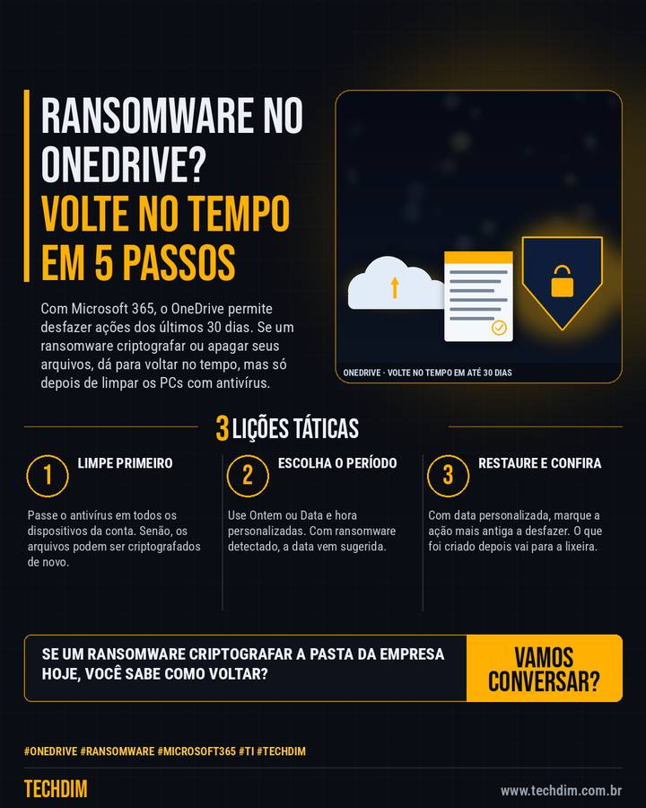

Dica prática
Restaurar o OneDrive: desfaça em 5 passos o estrago de ransomware ou exclusão em massa
Com Microsoft 365, o OneDrive permite desfazer ações dos últimos 30 dias. Se um ransomware criptografar ou apagar seus arquivos, dá para voltar no tempo, mas só depois de limpar os PCs com antivírus.

Resumo da dica
- Com Microsoft 365, o Restaurar o OneDrive desfaz alterações dos últimos 30 dias. Antes, passe o antivírus em todos os dispositivos da conta, para não criptografar de novo
- Em onedrive.com, abra Configurações > Restaurar o OneDrive e escolha o período (ex.: Ontem) ou Data e hora personalizadas. Com ransomware detectado, a data vem sugerida
- Veja o gráfico de atividades; em Data e hora personalizadas, marque a ação mais antiga a desfazer e clique em Restaurar. Arquivos criados depois vão para a lixeira
Seus arquivos estão no OneDrive? Aprenda o caminho de volta antes de precisar dele.
Por que vale a pena
Passo a passo oficial da Microsoft para desfazer ransomware ou exclusão em massa no OneDrive, um caminho de recuperação que pouca empresa conhece.
Passo a passo
- Limpe primeiro. Passe o antivírus em todos os dispositivos da conta. Senão, os arquivos podem ser criptografados de novo.
- Escolha o período. Use Ontem ou Data e hora personalizadas. Com ransomware detectado, a data vem sugerida.
- Restaure e confira. Com data personalizada, marque a ação mais antiga a desfazer. O que foi criado depois vai para a lixeira.
Fontes consultadas
Mais do Radar de hoje
- Notícia de tecnologia Gemini Enterprise processará dados no Brasil a partir de 15/10 com o Gemini 3.5 Flash
- Alerta de segurança SonicWall SMA 1000 CVE-2026-102255: falha nota 10 já sofre tentativas de ataque
- Serviço TECHDIM Check-up de TI: diagnóstico da infraestrutura e da segurança antes que algo pare a empresa
Leia também
Este texto resume as fontes citadas na data de publicação. Confira sempre o aviso oficial do fabricante antes de agir em produção.